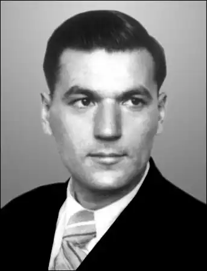

(Народився 24. IV. 1920)
У СОНЯЧНІЙ НЕВОЛІ ЗОБОВ'ЯЗАНЬ
Даруйте, читачу, за пафос. Але він тут виправданий і неминучий. Бо йдеться про самовідданого служителя Слова Дмитра Григоровича Білоуса. Попри культівсько-застійне глухоліття, попри будь-які кон'юнктурні перепади він завжди безхитрісно, завзято і, я б сказав, навіть азартно служив і служить Слову. Цілеспрямовано, затято, повсякденно. Одна із збірок поета так і називалася — "Обережно: слово!". Крадькома щезали українські школи, якось несподівано упали тиражі українських видань (бо кількість неуваги переросла в якість зневаги), хоч суспільний фасад запопадливо гримувався і маскувався під небувалий розквіт, під нібито зоряну годину нашої культури. Мабуть, у ту пору такі люди, як Дмитро Білоус, видавалися багатьом філологічними диваками, надокучливими фанатиками. Та прийшов час, і питання мови сягнуло рівня глобальної політики. Революційну перебудовну годину Дмитро Білоус зустрів, як то кажуть, у всеозброєнні. Нагромаджувані десятиліттями енергія, знання, спрага конкретної роботи врешті-решт знайшли благодатний вихід. Чутливо збагнувши суспільну потребу, поет видає збірку віршів для дітей молодшого і середнього шкільного віку "Диво калинове". Тираж у 108 тисяч примірників миттєво щез із полиць книгарень. Книжка стала справжнім помічником учителям-словесникам. Вона образною поетичною формою пробуджує інтерес юних читачів до "механіки", структури нашої мови, до її таємничих глибин. Ні, автор аніскільки не прагне вивищити свою мову за рахунок інших. Навпаки, він шанує багатство, своєрідність будь-якої мови. Йдеться ж бо про моральний обов'язок не забувати, знати материнську мову, а коли ширше брати — про необхідність кожному нести у своїй душі святе почуття любові і шани до рідної землі та її історії. У вірші "Коли забув ти рідну мову" розповідається про повернення додому такого собі сучасного стихійного (а може, свідомого) національного нігіліста: Не раді родичі обновам. Чи ти об'ївся блекоти, Що не своїм, не рідним словом Із матір'ю говориш ти? Ти втратив корінь і основу, Душею вилиняв дотла, Бо ти зневажив рідну мову, Ту, що земля тобі дала. . . . . . . . . . . . . . . . . . . . . . . Для тебе й Київ — напіврідний, І Мінськ піврідний, і Москва. Бо хто ти є? Іван безрідний, Іван, не помнящий родства! Згадана книжка лягла в основу однойменної надзвичайно популярної радіопередачі. І вже вся Україна слухає неквапливе, пристрасне і дотепне слово поета. При цьому особливо вражають листи-відгуки, що приходять на Українське радіо. Пишуть і старі й малі, пишуть люди різних професій, національностей, мов, далекі від філології. Бо у відродженні материнського слова вони побачили можливість відновлення гуманістичних засад нашого життя, утвердження порядності, працьовитості, побачили реальну можливість зупинити пошесть несмаку, нігілізму, бездуховності. Пишу про сьогоднішнього Дмитра Григоровича Білоуса. А у нього ж за плечима чималий життєвий шлях, який розпочався 24 квітня 1920 року в селі Курмани на Сумщині в багатодітній селянській родині. Крім Дмитра, у сім'ї були Наталка, Василь, Олекса, Катря, Павло, Маруся, Сашко, Христина, Надія, Микола. "Трудове виховання — на вигоні пастухування", "Справлялися добре з харчами, — не їли лиш хвостиків з груш", "Ходив я в сестринських чоботях з дірками замість підошов", — це вже пізніше поет осмислюватиме свої першовитоки. Осмислюватиме з несподіваною, непередбачуваною дотепністю: Взуття наше скріплював дріт, На штанях — химеристі лати: Сполучені (ниткою) Штати І Греція з островом Кріт. Безперечно, звідти, з дитинства — спрага до праці як надійного опертя за будь-якої години. Звідти ж — непоказна життєва стійкість і, я б сказав, чіпкість (в позитивному значенні цього слова). А все це завдяки народній педагогіці, яку ми не вивчили до пуття, а багато хто взагалі відкинув її як патріархальну, анахронічну. Нині ж важко реставрувати оті упродовж століть знаходжувані, усвідомлювані, а часом і напівсвідомі прийоми плекання юної душі. А головний "секрет" народної педагогіки — приклад власного життя. Не треба велемовних закликань і напучувань. Живи по совісті, і діти біля тебе ростимуть такими ж. Мати Дмитра — героїня хатнього космосу. "Maмa запам'яталася мені, малому, не через якусь родинну подію, а саме в найбуденнішому епізоді: присівши на хвилечку на скрині, вона геть-зовсім злягла на правий бік — і заснула. А тоді як схопиться: "Ой, що ж це я?! Стільки діла чекає, а я сплю!" У поета зберігаються квитки, вручені його мамі разом з орденом "Материнська слава" на безкоштовний проїзд залізницею. Один раз скористалася, більше не встигла... Батько Григорій Миколайович — сільський мудрець, книжник, порадник і заступник односельців. Його обрали навіть народним суддею. У сім'ї шанували слово, любили самодіяльний театр. Батько сам писав п'єси, старший брат Олекса пробував свої сили в поезії, друкувався у 20-ті роки, належав до активу літературних організацій "Молодняк" і "Плуг". Він також викладав історію в Харківській трудовій комуні А. С. Макаренка. Коли малий Дмитро, перехворівши висипним тифом, був на грані смерті, видатний педагог запропонував забрати кволого хлопчика в комунарівський гурт. Так майбутній письменник вирушив у люди. А на людей йому просто щастило. У харківській середній школі літературу викладав брат Тичини Євген Григорович. Дмитро потоваришував із його сином Владиславом і став бувати в них дома, у славнозвісному будинкові письменників "Слово". "Самі відвідини родини Тичини справили на мене велике враження, — згадував потім Д. Білоус. — Адже недавно, буквально всього кілька років тому, у цій квартирі жив сам Павло Григорович, і все тут освячене його іменем. І фото поета на стіні, і книжки в шафі, якими він користувався. Владик... іноді розкривав шафу чи висував шухляду стола і діставав книжку з автографом Павла Григоровича, його листа чи листівку, і я бачив чіткі, рівні літери — "живий почерк" визнаного поета, знайомий мені лише з друкованих його книжок. А тут ось зеленим чорнилом поет писав, що на нього саме "напало безгрошів'я" (до того я й не чув такого слова). А ще ось коротко сповіщалося про його закордонну поїздку десь до Туреччини..." Тоді у Д. Білоуса зародився великий інтерес до мови. Через усе місто їздив на заняття гуртка художнього слова при театрі робітничої молоді. А читав там лекції професор М. М. Баженов. Потім в університеті вчився разом з Олесем Гончарем, Григорієм Тютюнником. У той же харківський період у літературному об'єднанні познайомився з Олександром Підсухою і Валентиною Ткаченко. Загалом Дмитрові Білоусу притаманна спрага на людей, жадоба духовного суголосся. У спілкуванні він надзвичайно тактовний, ненав'язливий і водночас дуже вимогливий до того, про що мовиться. Не любить пліток, нашептів, обминає їх, немов брудні калюжі, не любить легкома підтакувати, коли не певен у справедливості сказаного. …Війна безжально поруйнувала усі плани, сподівання, надії. Добровольцем у складі студентського батальйону іде Д. Білоус на фронт. Потім виснажливі бої під Києвом, важке поранення, госпіталь у Красноярську. Згодом у рік 40-річчя Перемоги Олесь Терентійович Гончар згадуватиме про побратимів-студбатівців: "Серед небагатьох, котрі лишилися живими, наших студбатівців — Дмитро Білоус, поет і перекладач, з яким ми взимку 1942 року, виявляється, лежали в одному евакогоспіталі, в Красноярську, в приміщенні школи на березі Єнісею, хоч лише згодом дізналися, що під спільним дахом були наші госпітальні палати". Життя — найвинахідливіший сюжетотворець. Одразу після війни Д. Білоус працював літконсультантом у журналі "Вітчизна". Пощастило йому першому прочитати і оцінити рукопис (справді від руки писаний) першої частини тепер всесвітньовідомих "Прапороносців". Це видно з дарчого напису на першому виданні книги: "Першому читачеві і чесному оборонцеві "Альп" Дмитрові Білоусу з любов'ю. Олесь Гончар. 23.11.1948". Та це трапиться згодом. Війна тривала. Після одужання Д. Білоус працює на радіостанції "Радянська Україна", що вела передачі для народних месників-партизанів. У щоденному спілкуванні з Петром Панчем, Олександром Копиленком, Ярославом Галаном формувалась творча індивідуальність поета-сатирика. Неоціненними уроками були тодішні зустрічі з Остапом Вишнею, який з симпатією і прихильністю ставився до Білоуса. Згодом, на початку 50-х, Вишня захистить свого молодшого побратима од необгрунтованих нападок голобельної критики. Отже, перший творчий гарт молодий сатирик здобував у роки війни. У мирний час його обдаровання стрімко розвивалося. Привернули увагу і читачів, і професійної критики збірки гумору й сатири "Осколочним!" (до речі, редагував її Андрій Малишко), "Веселі обличчя", "Зигзаг", "Колос і кукіль", "Сатиричне і ліричне", "Критичний момент", "Тарасові жарти", "Хто на черзі", "Альфи — не омеги", "Хліб-сіль їж, а правду ріж". Д. Білоус надійно увійшов у сатиричний цех нашої літератури. В архіві П. Г. Тичини зберігається начерк його виступу про Д. Білоуса у зв'язку з прийомом останнього до Спілки письменників. Почуття приязні до свого молодшого колеги зберіг видатний майстер до кінця своїх днів. 19 листопада 1962 року о 5-й годині ранку поет записав у щоденнику: "Написати листа Дмитрові Григоровичу Білоусу (через Спілку): як здоров'я, як справи. Стрівся я з братом його, як ішли до консерваторії. Хотілося дещо більше поговорити з Вами. Про різне. Про хороше…" Не для захвалювання чи перехвалювання Д. Білоуса наводжу ці цитати, а щоб висвітлити його взаємини з видатними сучасниками. Адже сам Д. Білоус тверезо дивиться на свій доробок, ніколи не спинається на котурни. Отож і пише в мініатюрі "Замість епітафії": Не якісь захмарні мої обрії, Був я непомітним сіячем. Та хотів я щиро, люди добрії, Буть не просто хліба з'їдачем. Читаєш сатиричні твори Д. Білоуса минулих десятиліть, а особливо поему "Мерці" та вінок сонетів "На могили лукаволицих — хапуг, себелюбців та інших ницих", і ловиш себе на думці, що вони не втратили, на жаль, своєї актуальності і сьогодні... Поетів-сатириків у нас не так і мало. Та голос Д. Білоуса серед них не губиться.